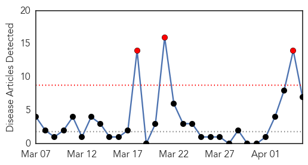
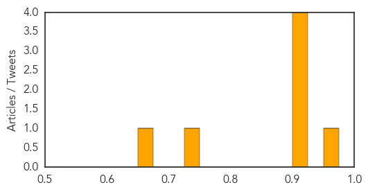

Meningitis
30-Day Web Trend
3 alerts, 0 warnings

30-Day Twitter Trend
1 alerts, 0 warnings

Article Locations

Article Confidences
Top Articles:
- 0.952
- WATCH: Three Dead from Meningitis in Los Angeles
- 0.919
- Gay men concerned after LA meningitis deaths
- 0.919
- Port Health Unit Opens at Aflao
- 0.916
- Many Gay Men Concerned After LA Meningitis Deaths « CBS Los Angeles
- 0.915
- Gay men concerned after LA meningitis deaths
- 0.738
- Meningitis kills three in Los Angeles County
- 0.656
- 3 Bacterial Meningitis Deaths In Los Angeles County
Top Tweets:
-
No tweets found for Apr 05, 2014
Mumps
30-Day Web Trend
7 alerts, 1 warnings
30-Day Twitter Trend
0 alerts, 0 warnings

Article Locations
Article Confidences

Top Articles:
Top Tweets:
-
No tweets found for Apr 05, 2014